Misaki, Okayama: things to do, food and stays
Misaki · Okayama
Misaki
Highlighted on the Okayama map.
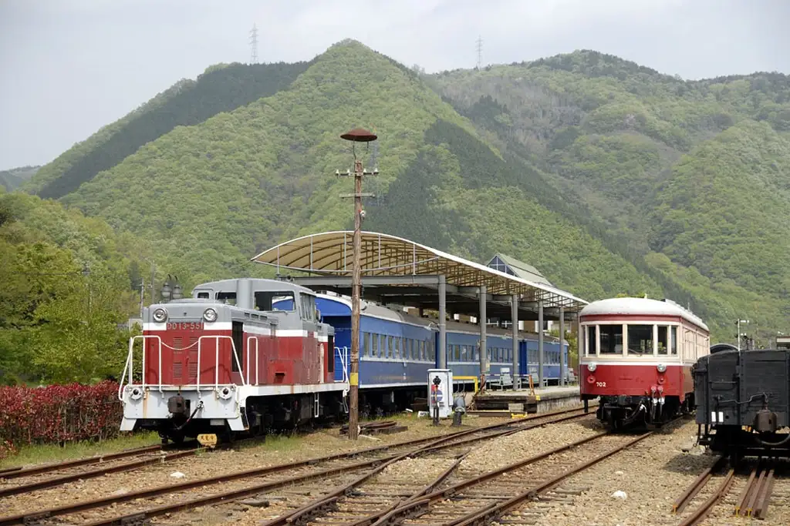
Stay
（棚田と雲海のお宿）阿吽山房
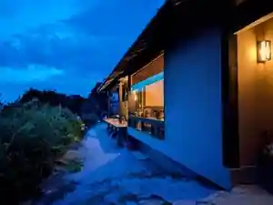
(Tanada To Unkai No Yado) Aun Sanbo
山荘やなはら
Sanso Yanahara
Dining
食堂かめっち。
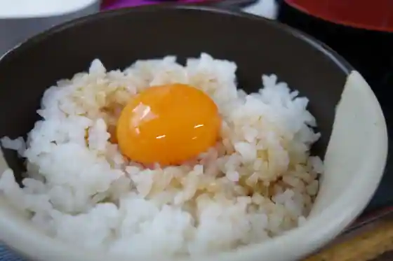
Shokudo Kametchi.
ユワデーのタイ料理
Yuwade No Tai Ryori
ツボヤ
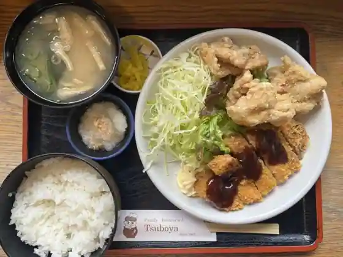
Tsuboya
寿
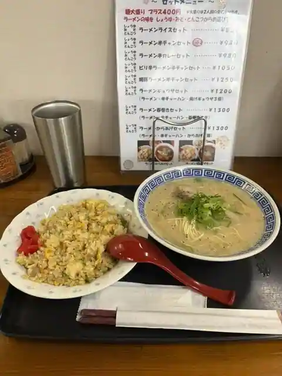
Hisashi
てんしん美咲店
Tenshin Misaki
まきばの館
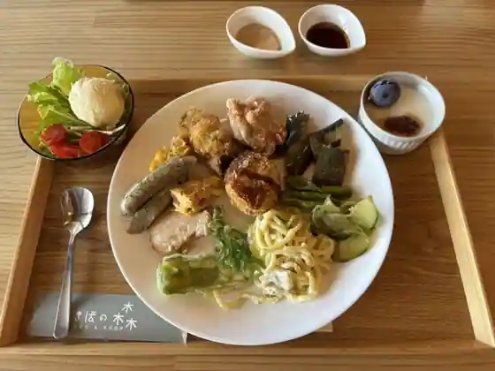
Makibano Kan
雪bolo
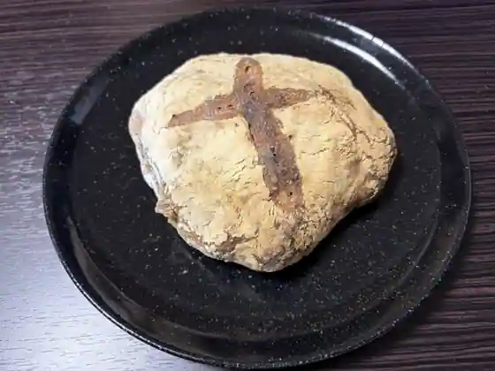
Yuki bolo
LANKA CAFE
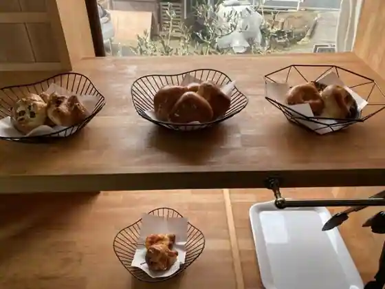
LANKA CAFE
ココペリ
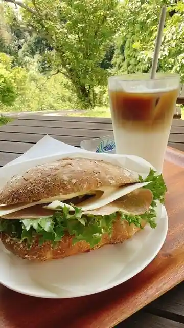
Kokoperi
町家紅茶店 凜香
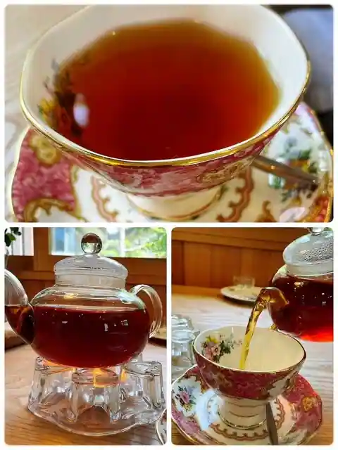
Choka Kocha Rin Kaori
鰻伶
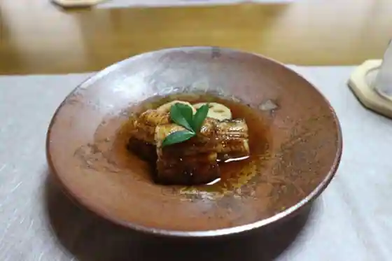
Unagi Rei
紅そば亭
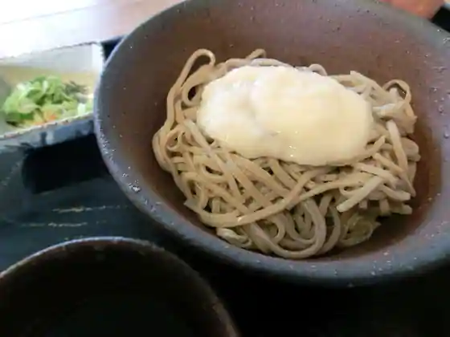
Kurenai Soba Tei
うどん坊みさき
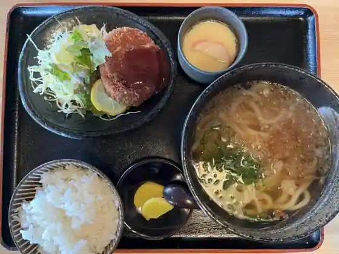
Udon Bo Misaki
またき亭
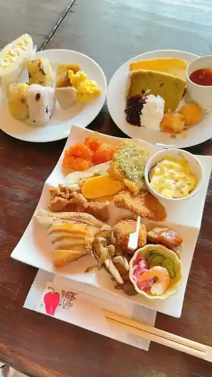
Mataki Tei
石の華本舗 昭和堂
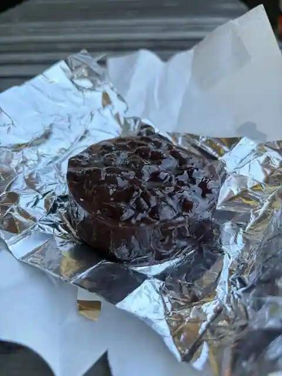
Ishi No Hana Honpo Showa Do
阿吽山房
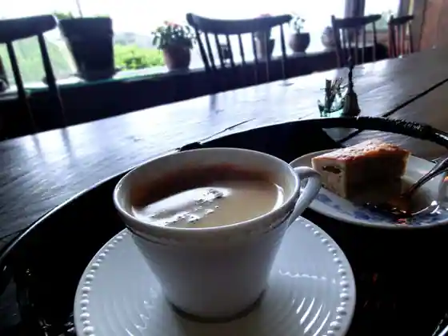
Aun Sanbo
古民家カフェ まんま庵
Ko Minka Cafe Manma Iori
棚田のお宿 阿吽山房
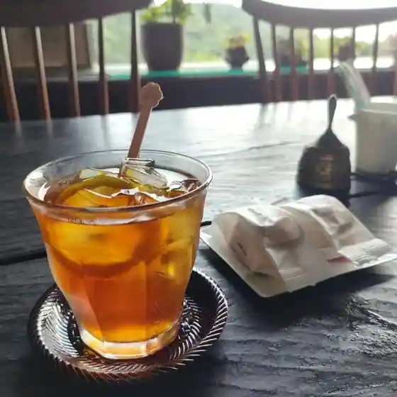
Tanada No Yado Aun Sanbo
オステリア ウーノ
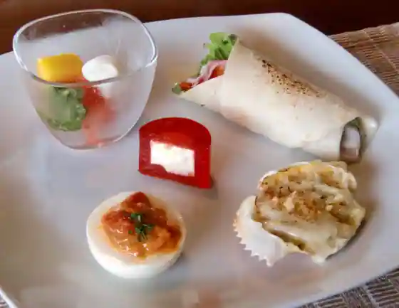
Osuteria Uno
焼肉亀家
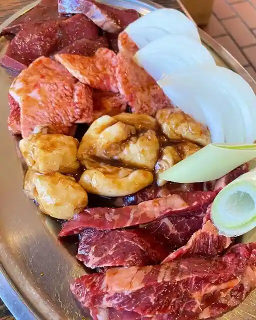
Yakiniku Kame Ie
ザ・オークレットゴルフクラブレストラン
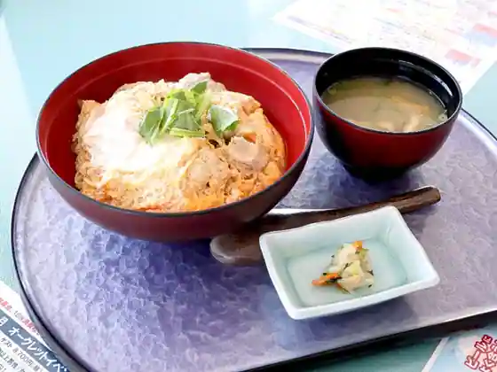
Za Okurettogorufukurabu Restaurant
くるみ
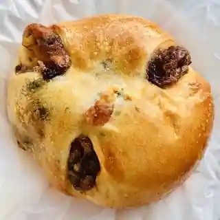
Kurumi
たこ丸
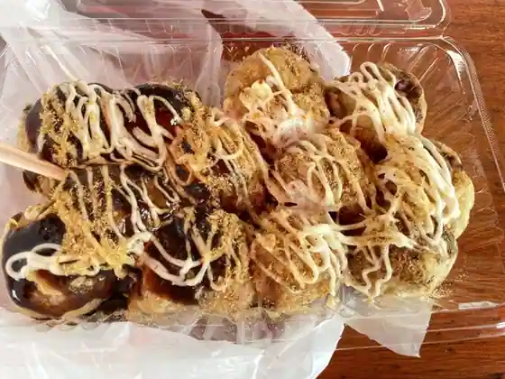
Tako Maru